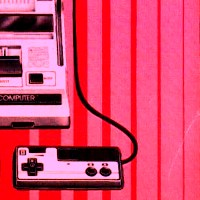
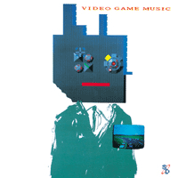

|
 |
#無職まであと2ヶ月。 そうだ、今年は左のピクチャを月イチで変えてこうと思ってたんだ。 そんな俺もそろそろ四捨五入で三十です、ちょっと怖いす。 |
| 2001.2 / 2001.4 |
今日のお買い物: 坂本真綾/Lucy
-2001.3.25
#えーと4年振りくらいにあらきなおみさんのミニライヴを見にお台場so-net cafeへ行ってきました。ライヴはとても心地よかったんですけど、なんつかお台場ってモノに免疫無いみたいで.....so-net cafeってアクアシティの中のメディアージュの5Fなんですけど、あんなにもキレイ過ぎる場所にはちょっと違和感を覚えちゃいました。 (大体、一人でお台場なんて行くなっての、俺。てゆーかカップル「写真撮ってくださ～い」だと？)
物販有って、あらきなおみさんの昔のライヴ音源のCD-Rを買いました。
ちなみにちっとも関係無いけど、高円寺百景の3枚目買った。新しいCPUはまだ。
-2001.3.23
#春なので、眠くてしょうがないです。
タワレコ行ってSILVER APPLESとかthis heat/health and efficiencyとかManuel Gottsching/E2-E4とか買ってきました。
でもそんなのはどーでも良くって。タワレコ一階を無視して通れなかったこんな再発モノ。
このレコード会社から細野さんのナムコシリーズの「スーパーゼビウス」と「リターンオブビデオゲームミュージック」もCDになるみたいです、ありがたや。

-2001.3.13
#行きましたよーやく今年は初のSPANK HAPPYのライヴ。
公式ページで歌詞見て「たぶん好きだろーなー」と予感していた "普通の恋" とか、なんだかたまんなかったです。一番好きなポップセンス。早くCD出ないかな。
で、そのライヴでカバーしてた MIKADO(細野晴臣のNON-STANDARDから出てたポップユニット)の曲がいたく気に入りまして、仕事(新潟に出張行ってた)帰りに渋谷のタワーへ捜しに行きました。
有りませんでした。
そーするとついつい他のCDなんか見ちゃったりするのが人の常なので。
John Fahey/YELLO PRINCESS
あと昔見たフランスのアニメのサントラがCD化されてたLA PANETE SAUVAGEのと、どーしても聴きたかった音源一曲だけの為に買っちゃった初期ルネッサンスRENAISSANCE/INNOCENCEを買いました。なんだか古いのばっかですね。
気になってた池田亮司さんのCDが視聴機に入ってて聴いてみたんですけど.....なんだかちょっと解らなかったのでそっと戻しておきました。正弦波の周波数を微妙にずらしてくモアレみたいなのかな？家のPCでもできそーな気もしてしまうんですけど。
発信音系の音は結構好きだと思ってたんですけど、何か他の音が有って初めて「ピー」って音が気持ち良く聞こえるみたいです。少なくとも自分には。
-2001.3.9
#ちょっとワクワクしてPowerMac7600/120を使ってみようとしました。
コネクタWin用のケーブルじゃ合わないんですね。
おやすみなさい。
くそ。
-2001.3.7
#誕生日でした。というか本当はDCPRGのライヴを見に西麻布のYELLOWへ行ってるはずだったんですが....昨日くらいからインフルエンザにやられてて断念しました。 ほんとは1時間くらい前まで「行っちまおうかな？」とか思ってたんですけど、二日も会社休んでるのにそんな事して明日「具合悪いです～」なんて言えないなーと思いまして。 ち、3/10のスパンクスは行きます。
点滴と座薬、６種類の薬でなんとかなってます。よーやく四半世紀生きただけなのにこんなヘロヘロでどーするんですかね？昨日一日中寝てたので睡眠は足りすぎてるんですけど。て言うか大丈夫ですか、アタマ？？？
あ、Macintoshを貰いましたPowerMac7600/120...G3ボード載せて私はこれからマッカーライフを送ってみたいと思ってます。流石にあの花柄のヤツには興味無いけどさ、マックいいじゃん。
八王子のHMVでmice parade/mokoondiを買いました。こっち系久々。
地元の中古屋の1枚\100で3枚買いました
the beautiful south/choke....ちょっと子供っぽい可愛いポップス。ちょっとホノボノ感が良いです。
the essensial of fripp & eno....聴いたこと無い曲に期待してガッカリ、つまんね。
oldfield - the orb/sentinel....M.Oldfieldのthe orbリミックス、ただOldfield自身がtublar bellsを何回もリミックスしてる感が有るからどーなんだろ。それよりは良いかも。
...そうあとREAL FISH/4をヤフーオークションで落札しそこねました、無念。
-2001.3.2
#仕事、出張、北陸行ってました。というか来週も行きます、北陸。あと2ヶ月という事で廃車寸前の車のよーに働かされてるのは気のせいじゃないような「オイル無いけどオッケー」的な....(見てないよな、マサカ)
そんな訳で今日のウズマキマズウ@吉祥寺マンダラ2は行けませんでした、東京20:30着じゃちょっと。そんなストレスを発散するためにCDを買いに。
川本真琴/gobbledygookを買いました、ストレス有ろうが無かろうが買うつもりだったCDですけど。
既発曲はともかくとして、とてもバラエティに富んだ....というか錯乱してる？とか思っちゃうくらいのアルバム、この人にとっては手法とかはきっとどーでもいいんでしょうね、色々な要素が混在したまんま「収束しない」と「洗練されない」っていう事かなと思います、成功してるのもあればそうでなさそうのモノもあるみたいですけど。やっぱりスゲエなと思いました、やっぱり好きだなとも。
二年前のシングルの"桜"なんてなんだかもー懐かしすぎです。ただちょっと「その髪型はなに？」とだけ言ってみたいです。
あ、あと陽気な若き博物館員たちを一緒に買いました。こんなの一緒に買う人いないだろなと思いつつ。